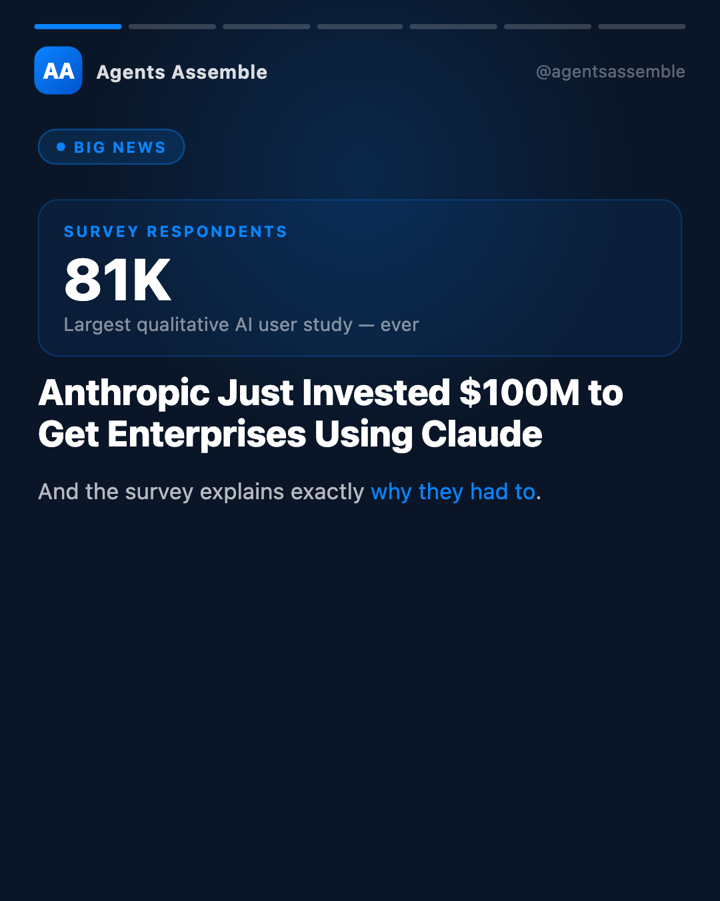
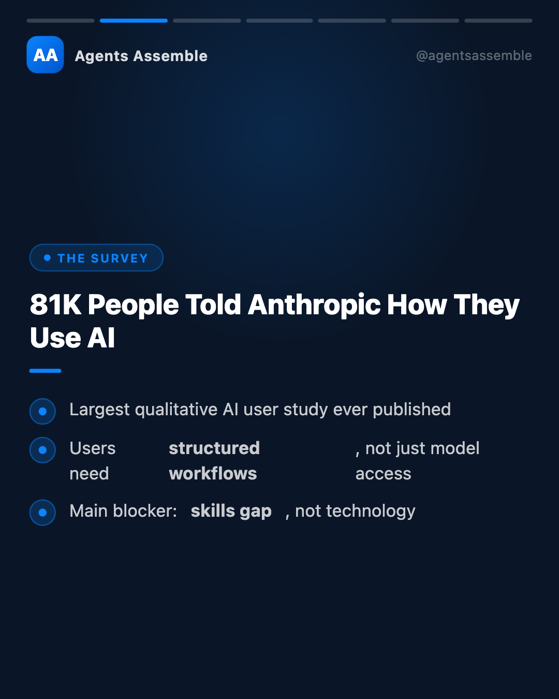
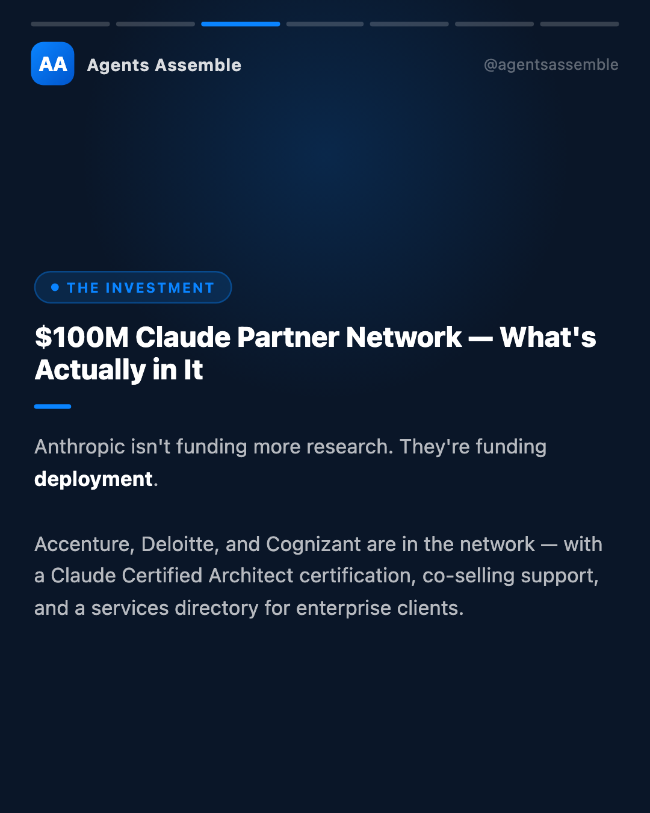
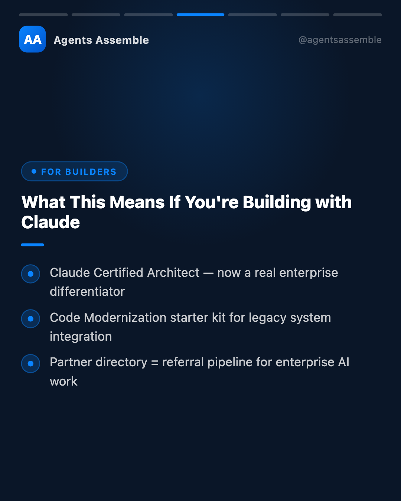
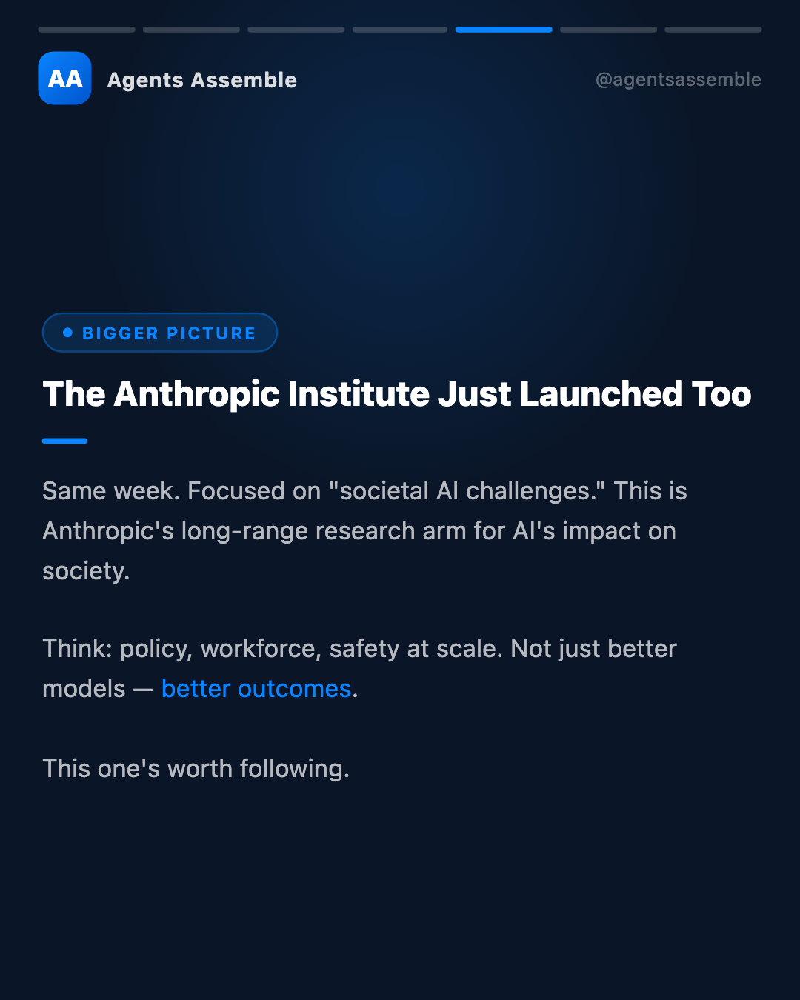
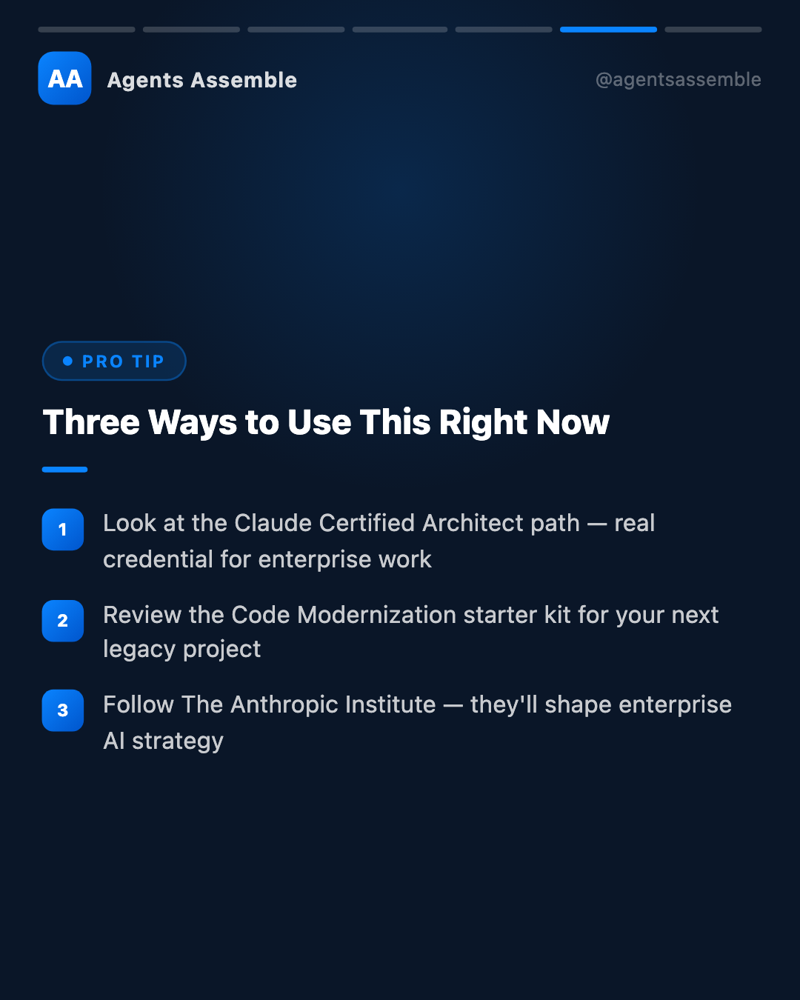
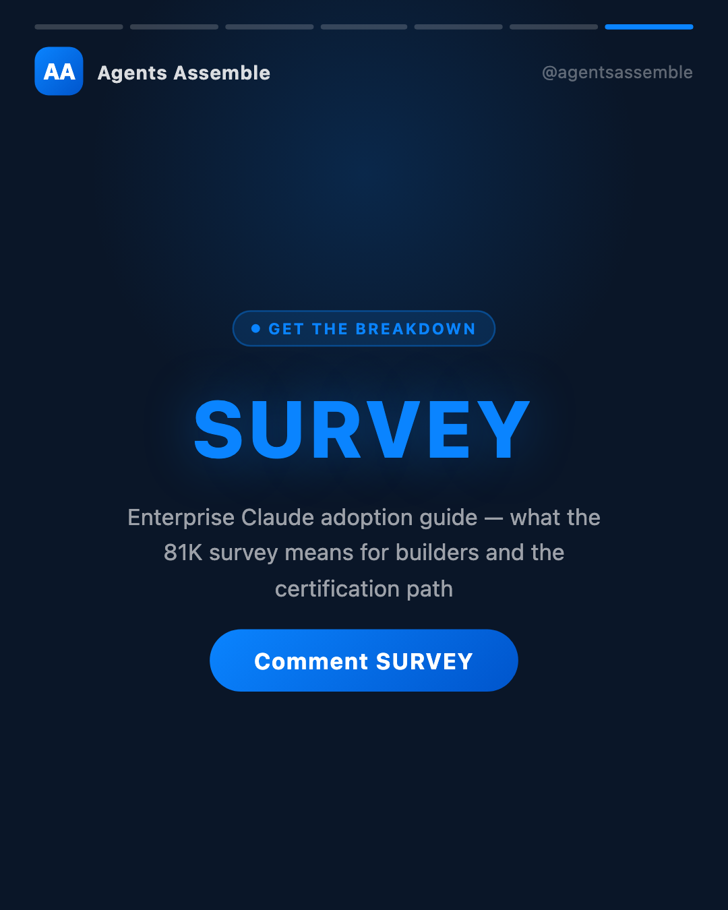

Key Takeaways
01
Largest qualitative AI user study ever published
02
Finding: users need structured workflows, not just model access
03
Main blocker to enterprise adoption: skills gap, not technology
04
$100M Claude Partner Network — What's Actually in It — Anthropic isn't funding more research. They're funding deployment. Accenture, Deloitte, and Cognizant are in the network
05
Claude Certified Architect credential — now a real enterprise differentiator
06
Code Modernization starter kit for integrating Claude into legacy systems
Analysis
Anthropic just published the largest qualitative AI user study ever conducted — 81,000 respondents — and the headline finding is something every AI builder should sit with.
The primary barrier to enterprise Claude adoption isn't model capability. It's the gap between what the model can do and what organizations know how to deploy.
Their response: a $100M partner network anchored by Accenture, Deloitte, and Cognizant, a Claude Certified Architect certification program, and a Code Modernization starter kit for legacy system integration.
For the builders and practitioners in this community, here's what I think is worth paying attention to:
The Claude Certified Architect certification is a real credential — 30,000 professionals in the first wave. If you're doing enterprise AI implementation work, this becomes a differentiator in procurement conversations where buyers need to justify vendor selection.
The Code Modernization starter kit is specifically designed for integrating Claude into legacy systems — one of the most common (and most painful) enterprise use cases. Worth reviewing if that's in your practice area.
The Anthropic Institute launching the same week is a signal about Anthropic's long-horizon thinking. "Societal AI challenges" is where policy, workforce displacement, and safety intersect at enterprise scale. Following their research output will matter for enterprise AI strategy.
Alex Holt at Accenture framed the overall thesis well: "Training 30,000 professionals on Claude requires structure — certification, co-selling support, and shared investment."
The 81,000-person data set confirmed what practitioners have observed at ground level: the deployment skill gap is the constraint, not the model. This investment is Anthropic's direct answer to that constraint.
Comment SURVEY if you want the full breakdown on the enterprise Claude ecosystem.
#AgentsAssemble #ClaudeAI #Anthropic #EnterpriseAI #AIAdoption #AIAgents #BuildWithAI #ClaudeCertified #AIWorkflow #AIStrategy
The primary barrier to enterprise Claude adoption isn't model capability. It's the gap between what the model can do and what organizations know how to deploy.
Their response: a $100M partner network anchored by Accenture, Deloitte, and Cognizant, a Claude Certified Architect certification program, and a Code Modernization starter kit for legacy system integration.
For the builders and practitioners in this community, here's what I think is worth paying attention to:
The Claude Certified Architect certification is a real credential — 30,000 professionals in the first wave. If you're doing enterprise AI implementation work, this becomes a differentiator in procurement conversations where buyers need to justify vendor selection.
The Code Modernization starter kit is specifically designed for integrating Claude into legacy systems — one of the most common (and most painful) enterprise use cases. Worth reviewing if that's in your practice area.
The Anthropic Institute launching the same week is a signal about Anthropic's long-horizon thinking. "Societal AI challenges" is where policy, workforce displacement, and safety intersect at enterprise scale. Following their research output will matter for enterprise AI strategy.
Alex Holt at Accenture framed the overall thesis well: "Training 30,000 professionals on Claude requires structure — certification, co-selling support, and shared investment."
The 81,000-person data set confirmed what practitioners have observed at ground level: the deployment skill gap is the constraint, not the model. This investment is Anthropic's direct answer to that constraint.
Comment SURVEY if you want the full breakdown on the enterprise Claude ecosystem.
#AgentsAssemble #ClaudeAI #Anthropic #EnterpriseAI #AIAdoption #AIAgents #BuildWithAI #ClaudeCertified #AIWorkflow #AIStrategy
Visual Breakdown






